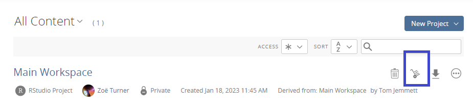
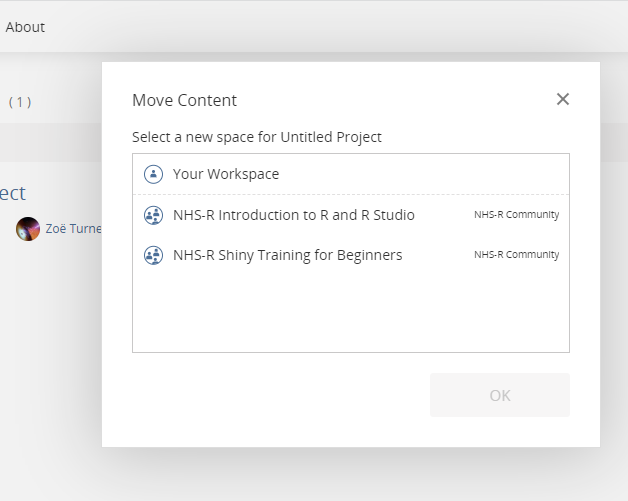

Community Handbook
Book Style Guide
To ensure that the book can be read easily by everyone, including screen readers and non-native English speakers, we have compiled a set of guidelines to keep a consistent style across all chapters of the book.
We follow the GOV.UK guidance to improve accessibility of the resources in The Turing Way.
Write each sentence in a new line (line breaks)
Please write all sentences in the markdown file on separate lines. Having each sentence on a new line will make no difference to how the text is displayed, there will still be paragraphs, but it will mean that any pull requests will be easier to check; the changes will be on a single line instead of somewhere in a paragraph. Consider the example below.
Today you are you, that is truer than true. There is no one alive who is youer than you. - Dr SeussA pull request on this correcting it to have a ‘.’ after Dr would show as a change to the whole paragraph. Contrast this with the next example which will be displayed online in the exact same way, but would see a change to a single line.
Today you are you, that is truer than true.
There is no one alive who is youer than you.
- Dr SeussOpinions are welcome, but …
The NHS-R Community Way book is intended to be only lightly opinionated. Whilst more opinionated content is allowed, such content should be clearly marked. The best way to do this is by displaying it in a quote box. This can be done by either prefixing every line with the greater than symbol >. Note that the formatting will be retained, so we can split each sentence to a new line as recommended before.
> I will not eat them in a house,
> i will not eat them with a mouse,
> i will not eat them in a box i will not eat them with a fox,
> i will not eat them here of there i will not eat them anywhere,
> I do not like green eggs and ham i do not like them sam i amAvoid Latin Abbreviation
Please do not use Latin abbreviations. See the Gov.uk recommendations for details.
Some of these abbreviations are:
- exempli gratia (for example)
- et-cetera (so on) and
- id est (that is)
These examples are not written out in their shortened form as the book can be set to fail to publish with Latin abbreviations through GitHub to enforce this style.
Instead of the first abbreviation in the table for exempli gratia, which can sometimes read aloud as ‘egg’ by screen reading software, please use ‘for example’ or ‘such as’ or ‘like’ or ‘including’ - whichever works best in the specific context.
Instead of the second abbreviation in the table for et-cetera to indicate open ended list, please start the list with words like ‘for example’ or ‘such as’ or ‘like’ or ‘including’.
Instead of third abbreviation in the table for id est that is often used to clarify a sentence, try (re)writing sentences to avoid the need to use it. If that is not possible, use an alternative such as ‘meaning’ or ‘that is’.
Explain acronyms
The NHS and many other public sector organisations often rely on acronyms to shorten long texts and names like
NHS Midland and Lancashire Commissioning Support Unit
becomes MLCSU.
Not everyone will be familiar with these acronyms, even if they work in the same sector like healthcare. It’s fair to continue to use NHS as we rarely say National Health Service but do consider your audience as not everyone is familiar with it and what it does.
For technical language, also consider explaining the acronym, at least once at the beginning of the text. This can be in the form:
Continuous Integration (CI)
so that whenever CI is referenced later its full form is in the text.
Use capitals wisely
Screen readers will read capitals as if they are acronyms which works for things like NHS and MLCSU. Because a screen reader read each letter, using capitals for emphasis in text like:
DO NOT do thiscould result in a screen reader spelling out the words do and not by individual letters. It’s also felt to be a bit like shouting in text so consider other ways of emphasis.
External links
Write external links using “http://” instead of “www”. This ensures they are correctly recognised as hyperlinks.
Chunks with code or special text
You can ensure that any code (or Markdown) chunks you have in the guide have the code syntax highlighted by mentioning the language in question. As an example, if you want to have some R code, when you open the chunk with three backticks you can add the language name immediately after it (``` becomes ```R).
Markdown source:
```R
x <- c(1:21)
```HTML output:
x <- c(1:21)Video Recording
NHS-R Community have a Zoom account which is most often used for training and Microsoft Teams Events which is used for webinars. Some events can be set up using Microsoft Teams which is managed through NHS Midlands and Lancashire Commissioning Strategy Unit.
In terms of recording, Zoom and Microsoft Teams Events only record the person speaking and their shared screen. Microsoft Teams which is used by many NHS and Local Authorities for meetings, however, shows the videos and names of attenders which may be an issue for attenders.
YouTube
We always intend to share recordings through YouTube publicly, however, we do respect where trainers or presenters ask specifically not to share recordings. We are able to edit parts of videos using YouTube editing, cutting or blurring parts and will do this when notified.
YouTube applies automatic subtitles after a period of time of uploading but at the moment we don’t amend those subtitles given the time it requires. However, this is something that we would like to do in the future and this may mean we get support from a community member.
Blogs
We host blogs on the NHS-R Community website and we welcome contributions from anyone who wishes to write about R, health and social care, data science techniques and can be just text or can include code. We review blogs before posting and will give feedback if there are any reasons that we can’t publish. Blogs are rarely removed so some will be out of date due to the changes in the programs like R and best practice.
Submissions for blogs can be in any format but need to be easily copied and pasted to nhs.rcommunity@nhs.net. For this reason pdf formats are not necessarily the easiest to share content.
Pictures and charts can be included in the blogs and these are expected to have Alternative Text or Captions for greater accessibility. This includes any pictures used for visual impact and not necessarily to add to the content directly.
Training
Posit Cloud
NHS-R Community pay for an account to use workspaces and projects for training/workshops. These mean that people can have projects that are set up with all the packages they require, have access to the latest version of R and RStudio and projects can be preloaded with any scripts or data. As Posit Cloud is hosted in the US this is used only for training where data is publicly available and the recommendation is to never use the Cloud for analysis of any sensitive data.
The Posit Cloud account is monitored and maintained by admins who have access to all projects and individual’s projects in the workspaces. Admins are:
Posit Cloud terminology
The workspace is the overall work area that is managed by a person for a training session or workshop. The projects are set up within the workspace and are set to duplicate for individual’s to also join the workspace.
Administrators for workspaces can see everyone’s project and can enter them if required.
Only one person at a time can be in a project.
Deletion of Posit workspaces and projects
To ensure that the Cloud is manageable and being used appropriately, projects can be moved by their creator to their own personal workspace.
Actively used workspaces
Projects in active workspaces, like the Introduction to R and R Studio workshop, will be archived after 3 months which means the project isn’t counted in the Cloud usage but is still retrievable.
One off workspaces
Workspaces for one off events like at conferences will be archived after 3 months and deleted after 6 months.
Prework for attendees
Equipment - screens
Many of the course and workshop formats expect a “code along” approach which is best done with 2 screens for comfort of moving between the demonstration and using RStudio on your computer.
Where users use two separate computers to enable having 2 screens, this may cause issues with sharing code in the chat functions and it will not be possible to share the coding screen for debugging support. If the person is using a Posit Cloud workspace and the course leader is an administrator then the course leader can access the project to debug.
Set up Posit Cloud
Sign up for a free Posit Cloud account at https://posit.cloud/ before the workshop. Log in with either an existing Google or GitHub account, or alternatively set up an account directly with Posit Cloud.
NHS-R Community will send an email confirmation that will include the specific Posit Cloud work space invitation link.
All the files and necessary packages are pre-loaded to the Cloud work space.
When you first log in with the link shared in the email it will take you to an Posit Cloud screen that says about Joining a space. Click on the blue button for Join Space:

The next screen that loads is a welcome page to the workshop and the final screen will have a project in it that, in this example, is called Intro_R_RStudio. When this is selected the project gets copied so you will see both the original Intro_R_RStudio and your own new one called Untitled. Although the word continue appears next to the original screen you will open your copy.
Difference between NHS-R workspaces and your own
You will be restricted to a certain number of hours a month on the free account which should be enough for the purpose of a day workshop, however, the NHS-R work space doesn’t, currently, have that restriction.
Taking the scripts to your own workspace
To move the project you’ve created to your own work space (which is available with the account you set up) select the moving trolley icon:

Then select Your work space. If you’ve been invited to any other work space you will also see them in the same Move Content screen:

It’s possible to download your files instead by using the down arrow by the Project.
Using your own laptop/computer
Some VPNs (Virtual Private Networks) block access to Posit Cloud or you may wish to use your own computer. VPNs sometimes do work but block parts of the R functionality, this is particularly a problem with Shiny apps.
If that is the case please ensure you have the latest R and RStudio installed.
It is important to have the latest R installed as older versions of R have had issues when installing {tidyverse} packages. Errors say that packages like broom or readr cannot be installed but even when this has been installed separately there continue to be other errors. Some of the answers in this post from Posit community may help.
If you require permission for programs to be installed on your computer by an IT department, it is worth getting agreement to also have these updated by your IT department regularly or by request as it is always good practice for fixing issues and bugs.
Installing packages
If a course expects an introductory understanding of R then package requirements to be loaded will be shared. Courses like the Introduction to R and RStudio will install packages as part of the course.
Course materials
Materials produced by and for NHSR Community will be available through GitHub. However, some workshops are provided with course material available through Posit Cloud only so contact nhs.rcommunity@nhs.net to request materials.
Introduction to R and RStudio course materials
The Introduction to R and RStudio workshop materials can be found in a specific module. Click on the green

The zip includes the data files which will be used in the workshop.
The following code can be run from the Console in RStudio to download the same files:
install.packages("usethis")
usethis::use_course("nhs-r-community/intro_r_data")Downloading slides
If you want to have the slides on your computer, they can be downloaded from the same repository as the intro-r files but on a branch called gh-pages. Using the same process as for Downloading files above you can download these to your computer by clicking on the green button and selecting the zip download.
Workshop confirmation emails
The NHS-R Community confirmation email will include:
- the link to the workshop
- the Posit Cloud specific workspace url and
- a calendar invitation
If you are not sure that you can access Zoom from your work laptop, please request a test Zoom meeting coordinated by nhs.rcommunity@nhs.net.
Modern desktop users (NHS England)
Some organisations are using a modern desktop system, please note that project do not appear to work with Projects/setwd and files like RMarkdown and Quarto don’t appear to work, giving the error:
Warning message: In options(stringsAsFactors = TRUE) : ‘options(stringsAsFactors = TRUE)’ is deprecated and will be disabled Error in setwd(“C:/R/WorkingDir”) : cannot change working directory Execution halted
Currently, the way around this is to create the missing folder “C:/R/WorkingDir” (so WorkingDir folder in a folder called R on the C: drive) and whilst the warning message will remain the report scripts .rmd and .qmd will work. The other recommendation is currently to work through UDAL if there is access.
Social Media
NHS-R Slack
https://nhsrcommunity.slack.com/
The NHS-R Community use the free version of Slack to facilitate conversations between members. Many people join the Slack group and enjoy reading the conversations without ever joining in and that’s ok as this is the best place to find out what’s happening with the community and a lot can be learned from others’ conversations. Because this is a free account we don’t have a history of posts but they would be available if we moved to a paid account.
Accessing the Slack
Some organisations’ emails have been added to the white list but because there are so many public sector organisations it may be that you require an individual link to join. Please contact the central email nhs.rcommunity@nhs.net for the link. Links that are shared are only available for several days.
It’s best to use an organisational email for the group, but not necessary, and you are also able to change the email once you’ve joined.
Deletion of accounts on Slack
Unfortunately with the free account we are unable to change email addresses which has affected some people when they move to a new organisation and require a password reset or use the Slack system of emailing a joining link. However, we can delete any old account to avoid confusion to others on the Slack so they will only tag or direct message the active account.
Other than this situation, we would only ever delete an account due to Chapter 2 issues.
Slack security
Administrators on the Slack can see email addresses and we can bulk email, however, we do not and have not used emails to contact people in bulk. Emails are not visible to others on the Slack workspace but people can Direct Message (DM) and those messages are not visible to administrators.
In line with good security principles we strongly suggest using two factor authentication for the Slack group.
You will need this for each Slack workspace that you have joined.
Weekly office hours
In order to support people and manage the time we can dedicate to that support, we have office hours which are currently on a Monday from 3pm-4pm GMT through a Microsoft Teams link that is shared in the #announcements channel in the NHS-R Slack group. The meeting is moved to a Tuesday when England has a public holiday on the Monday and these changes are announced in the Slack group. The weekly office hours are for anyone to come along, without needing to schedule, with any issues with R or RStudio as part of the NHS-R Community. The meetings are run by Chris Beeley, Zoë Turner and Tom Jemmett on a rotating basis and is open to anyone who wishes to support this in the community. We keep a record of the upcoming meetings in a Google sheet.
You are also free to come for a chat!
Twitter
The account for Twitter is managed by Chris Beeley, Zoë Turner and the administrative support for NHS-R Community. During events like the conference we extend this account access to interested NHS-R Community members who’d like to tweet from the account. We encourage retweeting and the use of hashtags during the conference which usually are often in the format #NHSRConf23.
The Twitter account is used to promote NHS-R Community activities and any other #RStats related content that will be of interest to a wide audience.
Fosstodon server on Mastodon
With the change in ownership to Twitter and a great deal of the NHS-R Community audience moving to Mastodon an NHS-R Community account is also managed through the open source content server, Fosstodon. This account, like for Twitter is managed by Chris Beeley, Zoë Turner and the administrative support for NHS-R Community.
Website
The NHS-R Community website is built using WordPress and managed through VergeLabs. We use the website to promote the NHS-R Community but also as an event management system where people can join the community events like the monthly webinars, conferences and other events. Signing up is at no cost but email addresses are visible to the maintainers of the website, VergeLabs and also Chris Beeley, Zoë Turner and the administrative support for NHS-R Community. We do not use email addresses to bulk email and contact is only ever in relation to the event that has been signed up for.
Mailing list
Currently the NHS-R Community does not hold a mailing list as we will have to ensure strict compliance with GDPR. It is advised to sign up to any system related to NHS-R Community with a work address but where a private address is used we will try to ensure that this is not shared.